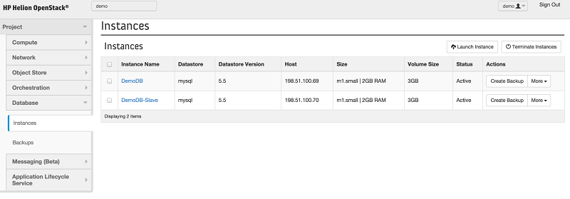

Replicating a database creates a slave for your instance that replicates every action on the master. Creating a database instance that is automatically replicated results in more durable data and can prevent data loss in a disaster scenario.
Prerequisites
To follow this guide, you must have already created a database instance that will be the master database.
Steps
- Log in to the Horizon console.
- Under your project, open the Database panel and then click the Instances
tab.

- Click Launch Instance.
- In the Details tab, specify the following options:
- Instance Name - the name of the MySQL instance that will be the slave instance.
- Flavor - the size of the instance to host the slave database on.
- Volume Size- the size of the volume to host the data on (in GB). Note: this cannot be changed later.
- Datastore - the MySQL datastore version to create.
-
Availability Zone (optional) - the availability zone that the database will be
created in. For replication, it is important for this to be in a different
availability zone than the master.
- Under the Networking tab, specify the network to associate the database instance with.
This is required and should be the same network that any application that accesses the
database is on.

- Click the Advanced tab and then use the Replicate from Instance drop-down to
select the master instance to
replicate.

- Click Launch to create the replica.